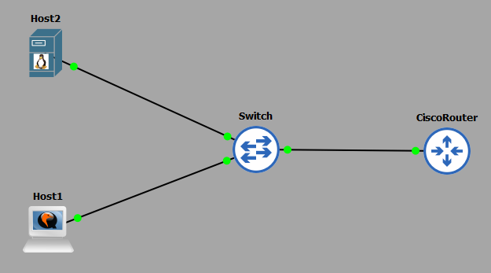
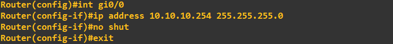
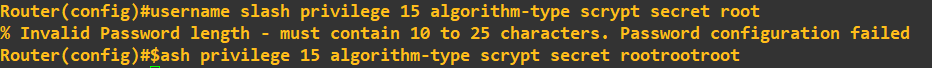
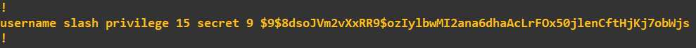
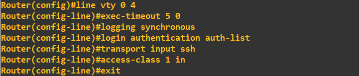
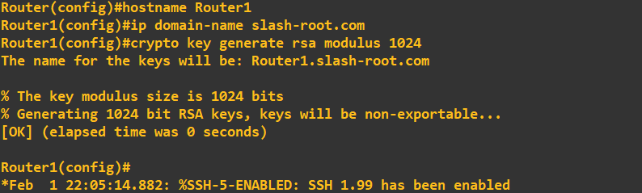
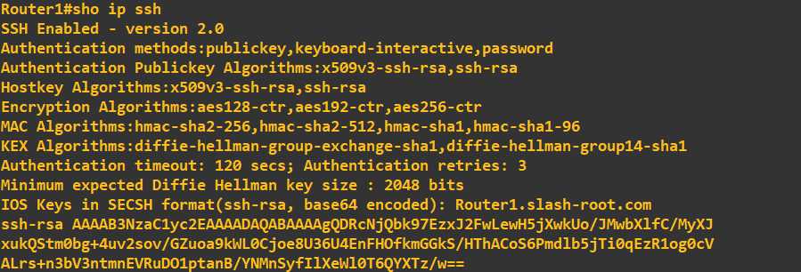
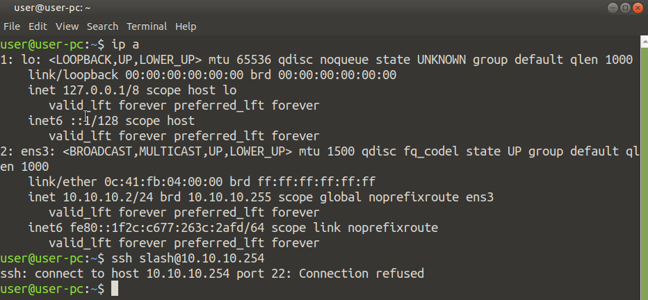
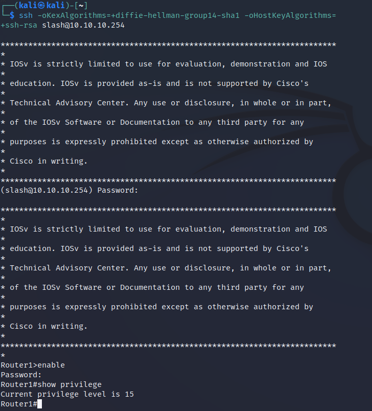

CISCO Configuring remote SSH access with AAA
When remotely administering CISCO devices (or any device for that matter) we want to ensure confidentiality i.e. we are not giving away access information such as our passwords. We also do not want to give away any following session information that could then be leveraged in an attack. One of the key transport methods of remote administration is using Secure Shell Protocol (SSH). One of the best ways to do this is in combination with Authentication, Authorisation and Accounting (AAA) - an effective toolset for network management and security.
Lab Setup
- GNS3 as the network emulation software.

- I have my PC (host1).
- A CISCO router on IOSv 15.7 (Router - Cisco Modelling Labs Personal $199).
- One additional PCs (host2).
- A CISCO layer 2 switch (Switch).
IP Schema
The IP schema for this lab will be 10.10.10.0/24. This will give us 254 useable addresses (256 - broadcast address - network address). The subnet mask will be 255.255.255.0.
Security Configuration
In this lab we want to enforce the following security policy:
- The router is to allow SSH connections for remote using the virtual lines 0-4.
- The router can only allow SSH connections from host1 (10.10.10.1), all others IPs should be denied. You should state 'No Unauthorised Access' as a warning.
- AAA should be used in conjuction with the LOCAL user database for remote authentication, followed by use of the enable secret for authorisation.
- The router should enforce a password length of at least 10 characters.
- The users passwords should be obfuscated using SCRYPT, with all users being given a privilege level of 15 (CISCO highest).
- The SSH server running on the router should use a RSA key of no less than 1024-bit strength.
Router Configuration
The routers interface is configured with an IP address:

We next enforce the password length of policy of 10 characters minimum: We set the enable secret as follows: We add a user with a privilege level of 15 to the LOCAL database using SCRYPT password obfuscation:
Notice how I tried to circumvent my own password policy by entering a password of 4 characters - the router would not let me. To see what this obfuscation type looks like, we can view it by looking at the configuration:
The next task is to create a new AAA model that will reference the LOCAL database for authentication and display a warning message. To do this we will create a reference called 'auth-list'. We are only permitted to allow the IP of host1 which will be 10.10.10.1 to SSH into the router. To do this we need to first create an Access Control List (ACL) specifying that host address:
We are now ready to configure the VTY lines, to do so we run the following:
We are only permitted to allow the IP of host1 which will be 10.10.10.1 to SSH into the router. To do this we need to first create an Access Control List (ACL) specifying that host address:
We are now ready to configure the VTY lines, to do so we run the following:

What we are doing here is first accessing the correct lines (lines 0 to 4), setting the executive timeout to 5minutes 0seconds, attaching the AAA model (auth-list), allowing SSH as a transport method and finally attaching the ACL ('in' to the routers interface). The final step is to setup and enable a SSH service on the router.
To do this we need to rename the router, which we do with hostname. We create a domain name and generate 1024-bit RSA keys. To check the SSH server is running we do the following:
You may notice that SSH v2 is running compared to v1.99 in the earlier screenshot. To enable SSH v2 simply enter:ip ssh version 2
Starting a SSH session
After configuring host1 (10.10.10.1) and host2 (10.10.10.2) we are now ready test our configuring. Lets try and SSH into the router from host2 first:
As expected, host2 which has an IP address of 10.10.10.2 is refused a SSH session (we are only allowing SSH sessions from 10.10.10.1). Let's start a SSH session from host1:
You will notice that when initiated the SSH session I had to include some additional parameters, these were just used to force it to connect with the cipher suites the router supported. As expected host1 connects without issue as its IP address is 10.10.10.1. Entering the enable password and showing our privilege we can see we are assigned a level of 15 as setup on the router.